Spotify Wear
A 2020 project inspired by Spotify Car Thing
My role: product designer, UX designer, UX researcher
Problem:
Media controls are a major feature of popular wearables, but standalone streaming player features are rudimentary at best.
Process:
I made a list of WearOS-provided features and thought of ways Spotify could take advantage of these. I also examined then-rumors of the device that eventually became Car-Thing (a car-focused device focused on Spotify playback controls).
Result:
I designed a smartwatch focused on Spotify streaming, leveraging Wear OS specific features.
 behance
behance
 youtube
youtube
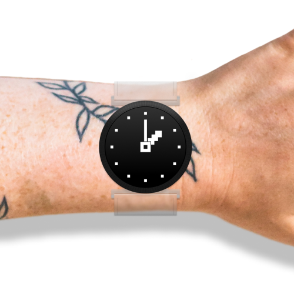
Wear with a clear band
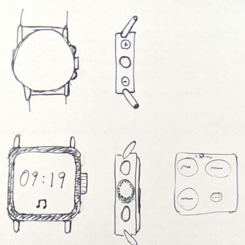
 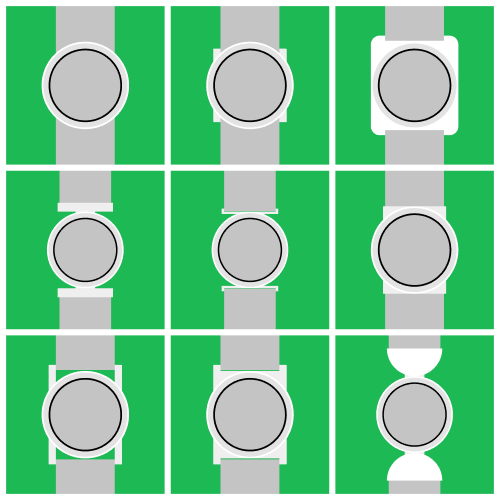
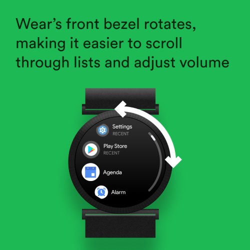
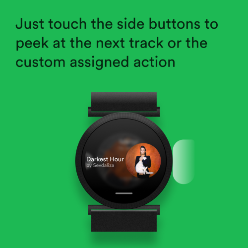
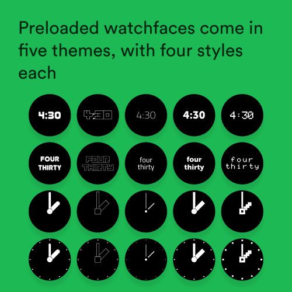
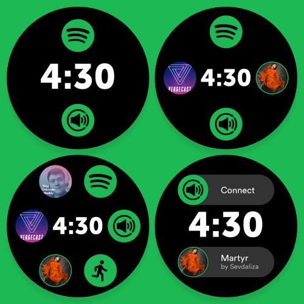
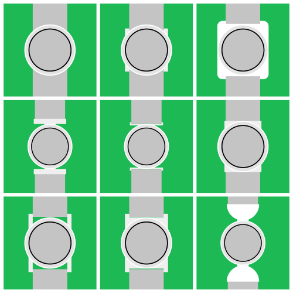
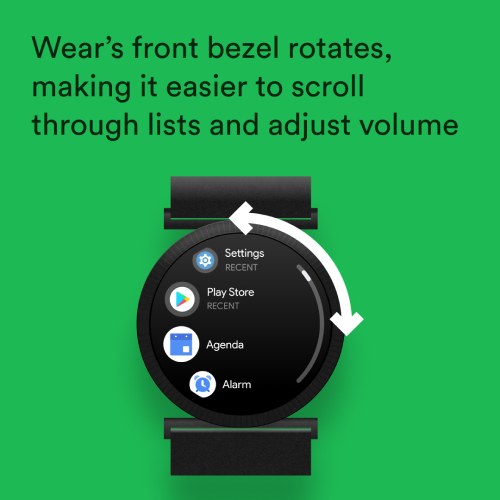
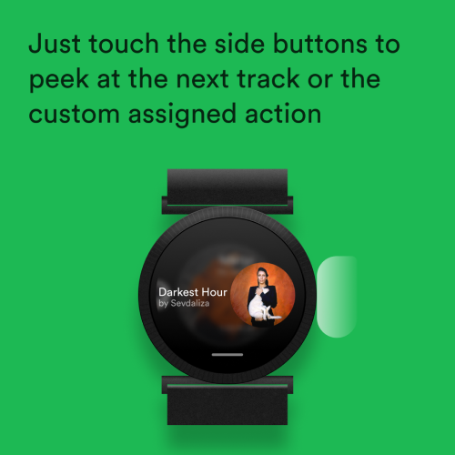
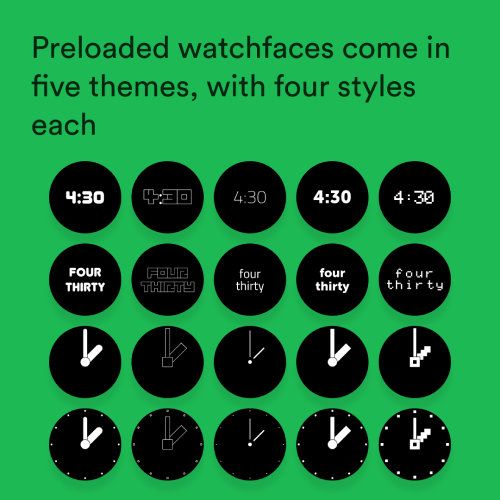
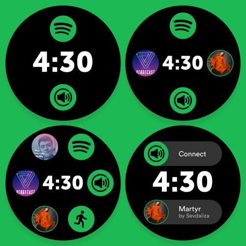

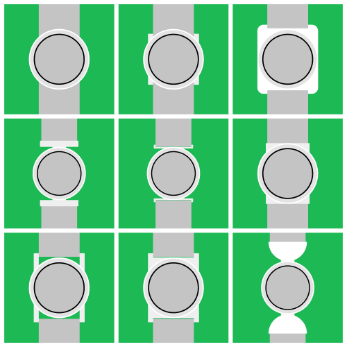
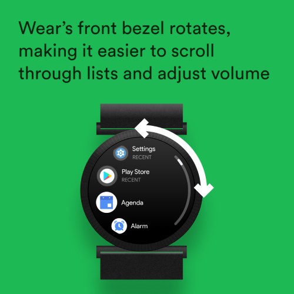
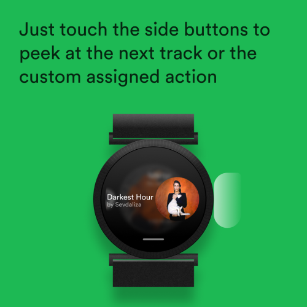
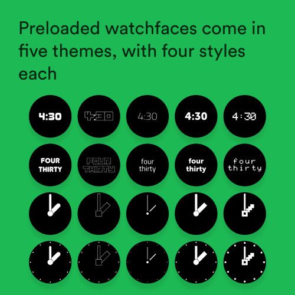
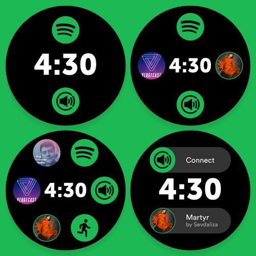
Final Video